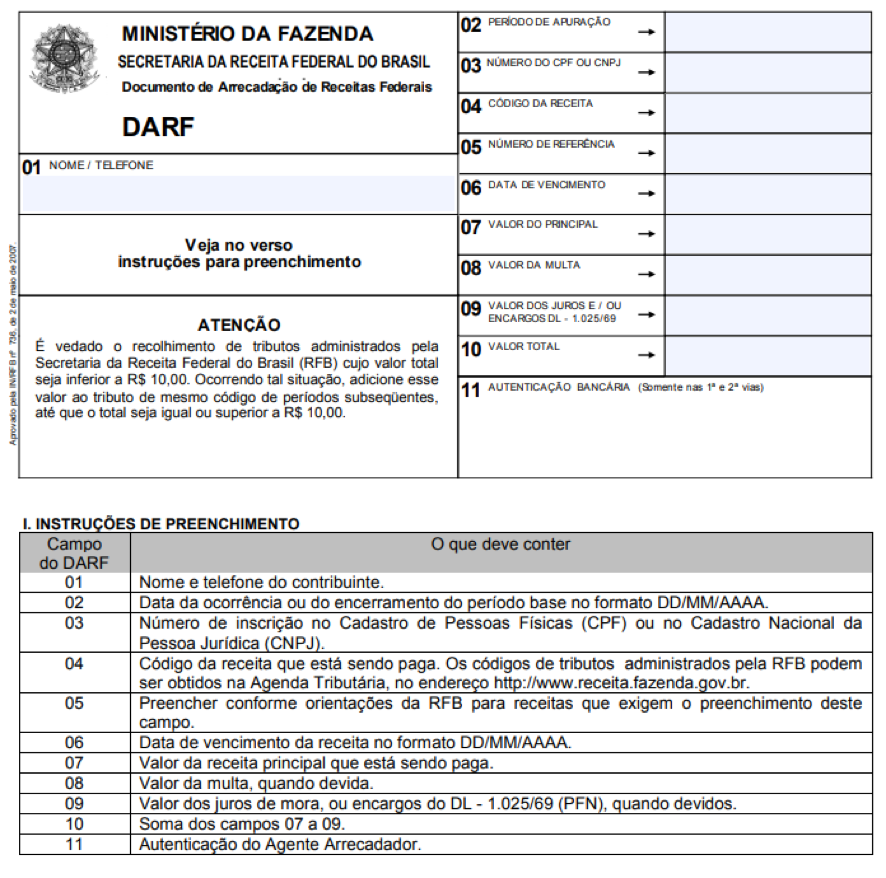
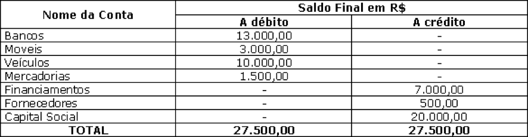
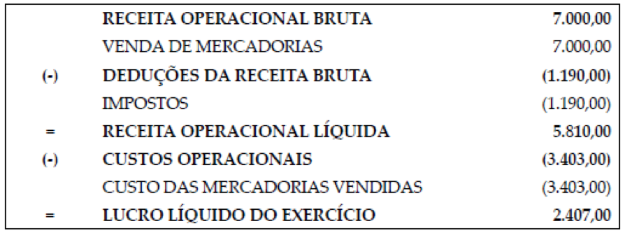

O setor contábil é muito importante para as organizações, pois realiza atividades ligadas diretamente a todo o dinheiro movimentado nas empresas. Dessa forma, todos os outros setores necessitam dos dados que são gerados pela contabilidade, visto que, sem esse controle, não é possível tomar decisões, criar metas e até mesmo enfrentar e saber lidar com os momentos de crise.
É imprescindível que o gestor saiba administrar o setor de contabilidade, para que possa fornecer todas as informações de que os demais setores da organização precisam.
Você, futuro técnico em contabilidade, terá a oportunidade de adquirir conhecimentos que o ajudarão a competir no mercado de trabalho, tendo em vista a importância desse setor na vida das organizações.
São muitas as atribuições do setor contábil nas organizações, por isso é importante poder contar com profissionais que tenham conhecimento do dia a dia da contabilidade.
De acordo com Bazzi (2014), contabilidade tem atuação em todas as entidades econômico-administrativas, ou seja, as organizações que unem, no formato de elementos constitutivos, um objetivo, pessoas e um patrimônio. A aplicação da contabilidade pode ser realizada em qualquer organização, independentemente de sua classificação, pois o que se está buscando ao aplicar a contabilidade é o controle e a organização na visão contábil.
A partir da compreensão da aplicação da contabilidade nas organizações, é possível identificar seus usuários, que podem ser externos e internos (BAZZI, 2014).
Os usuários externos representam aqueles que não têm acesso direto às informações contábeis geradas pela organização, no entanto, eles recebem os relatórios que transmitem todas as informações necessárias para usarem como base na tomada de decisão. Esses usuários contam também com as demonstrações contábeis, quando são publicadas, conforme exigência da legislação.
Já os usuários internos contemplam todos aqueles que têm relação direta com a organização e fácil acesso a todas as informações contábeis geradas.
Veja, segundo Bazzi (2014), os principais usu√°rios: internos e externos.
Ao contador, é permitido atuar na condição de profissional autônomo ou liberal, assim como ser servidor público, pertencer ao quadro de sócios de uma sociedade, ser diretor ou colaborador contratado mediante a Consolidação das Leis do Trabalho (CLT).
Compreenda melhor as atribuições do profissional técnico em contabilidade, observando a seguir o Decreto-Lei n.º 9.295/1946:
Art. 25. São considerados trabalhos técnicos de contabilidade:
a) organização e execução de serviços de contabilidade em geral;
b) escrituração dos livros de contabilidade obrigatórios, bem como de todos os necessários no conjunto da organização contábil e levantamento dos respectivos balanços e demonstrações;
c) perícias judiciais ou extra-judiciais, revisão de balanços e de contas em geral, verificação de haveres revisão permanente ou periódica de escritas, regulações judiciais ou extra-judiciais de avarias grossas ou comuns, assistência aos Conselhos Fiscais das sociedades anônimas e quaisquer outras atribuições de natureza técnica conferidas por lei aos profissionais de contabilidade.
§ 1.º Os serviços profissionais de contabilidade são, por sua natureza, técnicos e singulares, quando comprovada sua notória especialização, nos termos da lei. (Incluído pela Lei n.º 14.039, de 2020)
§ 2.º Considera-se notória especialização o profissional ou a sociedade de profissionais de contabilidade cujo conceito no campo de sua especialidade, decorrente de desempenho anterior, estudos, experiências, publicações, organização, aparelhamento, equipe técnica ou de outros requisitos relacionados com suas atividades, permita inferir que o seu trabalho é essencial e indiscutivelmente o mais adequado à plena satisfação do objeto do contrato. (Incluído pela Lei n.º 14.039, de 2020).
Conforme o Conselho Federal de Contabilidade (CFC), entre as atribuições do técnico em contabilidade está a organização contábil, que poderá ser aplicada em escritório individual ou não, ou ainda em uma sociedade contábil.
O meio contábil, tanto dentro de uma organização, quanto em escritório contábil, envolve documentos e informações diversas. O profissional de contabilidade busca atender a todas as expectativas dos seus usuários, entre eles os clientes.
Para que o setor da contabilidade desenvolva suas funções, ele interage com outros setores que também estão vinculados ao serviço de contabilidade (REDE NACIONAL DE CONTABILIDADE, 2018).
Alguns dos setores que contam com esse vínculo, de acordo com o Conselho Regional de Contabilidade do Rio Grande do Sul (CRCRS, 2012), são:
É nele que ocorre o registro das notas fiscais de entrada, de saída e de serviços. Nesse departamento são gerados os livros fiscais, quando exigidos pela legislação, assim como as demais obrigações tributárias que as organizações possuem, por exemplo, atividades que envolvem baixas de inscrições de esferas municipal, estadual e federal e consulta e solicitação de negativas.
Envolve a contratação de todos os colaboradores e a manutenção de folha de pagamento, contracheque e todos os impostos incidentes sobre eles, como, por exemplo:
A seguir, observe o modelo de DARF (Documento de Arrecadação de Receitas Federais), utilizado também para pagamento do imposto de renda sobre a folha de pagamento.

Figura 1 – DARF e instruções de preenchimento
Fonte: <https://receita.economia.gov.br/formularios/pagamentos-parcelamentos/documento-de-arrecadacao-de-receitas-federais-darf/fomulario-darf-comum-anexo2.doc>.
A figura 1 representa o Documento de Arrecadação de Receitas Federais (DARF) e, logo abaixo, as instruções para preenchimento.
O DARF está dividido em 11 campos, conforme as instruções para preenchimento. As instruções dividem-se em duas colunas: na primeira está escrito “Campo do DARF” e na segunda “O que deve conter”.
Seguem as explicações para cada campo:
Realiza a escrituração dos livros Diário e Razão e gera todas as declarações que a empresa deve apresentar de acordo com a legislação (REDE NACIONAL DE CONTABILIDADE, 2018).
A escrituração do livro Diário busca evidenciar todas as transações ocorridas em um período na organização. Conforme Padoveze (2014, p. 125), “[...] pelo fato de ser apenas uma listagem, não é possível fazer o controle dos valores de cada conta, com seus respectivos eventos específicos”. De acordo com Padoveze (2014), é por meio da escrituração contábil que ocorre o controle econômico da organização. A escrituração contábil tem como base as teorias, os princípios contábeis, a metodologia e as práticas contábeis.
O livro Razão é dividido e evidenciado por contas que representam um elemento patrimonial, recebendo lançamentos exclusivos de cada conta.
A escrituração contábil considera o registro, nos livros contábeis, de fatos que modificam economicamente o patrimônio da organização, fazendo uso do método das partidas dobradas.
Atualmente, os livros são enviados pelo setor contábil em formato digital. O envio digital surgiu visando a substituir a escrituração, que antes era enviada em papel.
De acordo com o CFC, o Decreto n.º 8.683 possibilitou a autenticação de livros contábeis das empresas mediante o Sistema Público de Escrituração Digital (SPED), de que trata o Decreto n.º 6.022/2007, por meio da apresentação da escrituração contábil digital.
O envio dos livros no formato digital inclui:
Contempla as constituições, as alterações de contratos, a elaboração de atas, entre outros. É preciso que o profissional de contabilidade organize suas funções diárias, considerando os aspectos que necessitam de atenção, conforme a Rede Nacional de Contabilidade (2018).
De acordo com Marcolino (2020), o setor de contabilidade separa toda a documentação ordenadamente, facilitando dessa forma o lançamento dos documentos no sistema contábil. Cabe à contabilidade também realizar o registro de ativos fixos com o qual conta a organização. Os ativos fixos que a contabilidade registra poderão ser tanto tangíveis (materiais) quanto intangíveis (imateriais).
Outra função importante que compete ao setor contábil é a apuração dos tributos. Por esse motivo, é necessário manter-se sempre atualizado para atender à legislação vigente. O profissional contábil que atua na apuração tributária precisa ter foco na redução da carga tributária e cumprir as obrigações acessórias (MARCOLINO, 2020).
Conforme C. R. Júnior (2021), o contador tem responsabilidades que estão vinculadas diretamente ao empreendedor ou administrador da organização. O contador executa suas funções para gerar informações contábeis relevantes que envolvem toda a organização e que serão úteis para a tomada de decisão.
Toda a movimentação documental da empresa é registrada pela contabilidade. Os lançamentos realizados resultam na transformação de dados em informação contábil. Desse modo, é possível afirmar que a contabilidade é uma ferramenta de gestão essencial para todas as organizações.
Conforme Padoveze (2014, p. 124), o registro do lançamento contábil é estruturado pelas seguintes informações:
Para definir a ordem cronológica dos fatos ocorridos, a data do lançamento e o histórico são fatores essenciais, pois detalham criteriosamente o que levou à ocorrência patrimonial. Os lançamentos são realizados com base em documentação, como, por exemplo, notas fiscais, faturas, boletos, comprovantes de recebimentos e pagamentos, entre outros.
Em situações nas quais o contador não cumprir com as suas obrigações relacionadas à prática contábil, ele deverá responder penalmente por isso, caso os órgãos competentes acionem o cliente envolvido.
De acordo com C. R. J√∫nior (2021),
o contador é responsável pelo controle de créditos tributários, aplicação de alíquotas e outras questões que influenciam a emissão de guias para recolhimento dos tributos de uma empresa. No entanto, a responsabilidade do contador começa a partir do recebimento das informações de forma correta e no tempo ideal por parte do cliente.
Conforme Padoveze (2014), entre as responsabilidades que competem profissional de contabilidade estão os relatórios contábeis, considerados mais relevantes para a tomada de decisão. É importante destacar que o técnico em contabilidade terá a função de auxiliar no registro de toda a documentação que compõe as demonstrações contábeis e na elaboração destas, no entanto, o responsável pela conferência e assinatura dos documentos é o contador.
Corresponde ao primeiro relatório contábil emitido através do plano de contas. O documento tratado evidencia somente as contas contábeis e o saldo individual de cada uma delas, não representando assim uma demonstração contábil, mas o documento é usado para a elaboração das demonstrações contábeis que atenderão aos usuários externos da contabilidade. A partir da figura a seguir você poderá visualizar um Balancete de Verificação, observando as contas e os seus saldos.

Figura 2 – Balancete de verificação
Fonte: <https://www.juliobattisti.com.br/tutoriais/rodrigosfreitas/conhecendocontabilidade024.asp>.
A figura 2 demonstra o balancete de verificação, que é estruturado por 3 colunas e 9 linhas, no qual a 1.ª coluna evidencia o nome das contas do plano de contas, a 2.ª indica os valores lançados a débito e, a 3.ª, os valores lançados a crédito.
Na primeira linha, aparecem os bancos com um valor de R$ 13.000,00 a débito. Na segunda linha, aparecem os móveis com um valor de R$ 3.000,00 a débito. Na terceira linha, aparecem os veículos com um valor de R$ 10.000,00 a débito. Na quarta linha, aparecem as mercadorias com um valor de R$ 1.500,00 a débito. Na quinta linha, aparecem os financiamentos com um valor de R$ 7.000,00 a crédito. Na sexta linha, aparecem os fornecedores com um valor de R$ 500,00 a crédito.
Na sétima linha, aparece o capital social com um valor de R$ 20.000,00 a crédito. A última linha do balancete de verificação apresenta o total de operações a débito e a credito e os saldos de cada uma delas no valor de R$ 27.500,00.
É a demonstração contábil mais relevante e tem como função demonstrar a evolução patrimonial da organização, apresentando bens, direitos e obrigações.
A figura a seguir demonstra o modelo do balanço patrimonial e algumas das contas que evidenciam os bens, os direitos e as obrigações da organização.
Figura 3 – Estrutura do balanço patrimonial
Fonte: <http://miscelaneaconcursos.blogspot.com/2012/08/estrutura-do-balanco-patrimonial.html>.
A figura corresponde ao balanço patrimonial, que é dividido em duas colunas: ativo e passivo. A 1.ª coluna apresenta o ativo, dividido internamente em dois grupos: ativo circulante e ativo não circulante. Abaixo do ativo não circulante aparecem os subgrupos realizável a longo prazo, investimentos, imobilizado e intangível.
A 2.ª coluna evidencia três divisões: passivo circulante, passivo não circulante e patrimônio líquido. Abaixo do patrimônio líquido ficam as contas do patrimônio líquido. No final da primeira coluna está escrito total do ativo e, na segunda coluna, total do passivo.
Visa a apresentar o lucro ou o prejuízo da organização para o período. É uma demonstração contábil muito importante e necessária ao balanço patrimonial. A figura a seguir demonstra o modelo de DRE com algumas das informações.

Figura 4 – Demonstração do resultado do exercício
Fonte: KOWALSKI (2012, p. 91).
A figura 4 evidencia a DRE, formada por um quadro que apresentada todas as contas de resultado, ou seja, receitas e despesas. A composição é apresentada por contas, uma abaixo da outra.
O primeiro valor apresentado se refere à conta de receita operacional bruta, pois, a partir dessa conta, serão apresentadas as demais que evidenciarão valores, os quais devem ser deduzidos da receita operacional bruta. Na sequência é apresentada a venda de mercadorias, que representa o total vendido no período. A seguir estão as deduções da receita bruta, que são compostas pelos impostos. A receita operacional líquida é apresentada na linha seguinte, indicando o total da receita operacional bruta menos as deduções da receita bruta. Depois são apresentados os custos operacionais que abrangem os custos para a mercadoria vendida, deduzidos da receita operacional líquida.
Na última linha é apresentado o lucro líquido do exercício, representando o valor positivo da organização posterior às despesas e aos custos deduzidos da receita.
A DRE visa a demonstrar os resultados operacionais segregados dos resultados financeiros. Conforme Padoveze (2014, p. 121), “[...] a DRE é usada para avaliar o desempenho da empresa em termos do retorno do investimento”.
A DRE apresenta o resultado líquido de um exercício por meio do confronto entre as receitas e as despesas da organização. O demonstrativo contábil possibilita as análises vertical e horizontal, nas quais é possível verificar a evolução da empresa ao comparar períodos ou mesmo grupos de contas (Sebrae, 2019).
É possível afirmar que o técnico em contabilidade tem as mesmas responsabilidades e pode executar as mesmas funções que o contador, exceto:
As atividades citadas est√£o direcionadas exclusivamente ao contador.